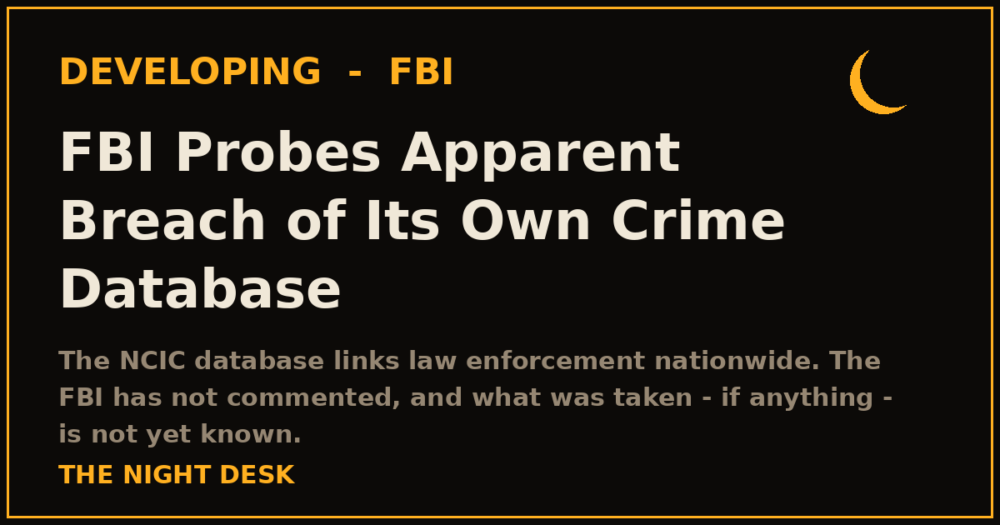

November 21, 2026 · 2 min read
DEVELOPING: FBI investigating apparent breach of its own crime database

Headline card by The Night Desk
DEVELOPING: FBI investigating apparent breach of its own crime database
DEVELOPING — details are partial and this story will be updated.
The FBI is investigating an apparent breach of its National Crime Information Center (NCIC), two people briefed on the matter told NBC News on Friday, Nov. 20. CNN reported the intrusion earlier in the evening.
The NCIC is the nationwide system that connects federal, state and local authorities so law enforcement information — warrants, background checks and criminal justice records — is available across the country. A former FBI official who led investigations into cybercriminal groups told CNN the database is one of the most critical information-sharing systems in law enforcement.
What we know
- The apparent intrusion was discovered in recent days, per CNN's sources.
- The FBI had no comment as of Friday night, per NBC News.
- This would be the second intrusion involving an FBI system in recent months: in September, the FBI announced an investigation into a hacking group that claimed it had stolen data on agents through the agency's job portal.
What we don't know
Plainly: a lot. Nobody has said — on the record or off — who breached the system, how they got in, when exactly it happened, or whether any records were taken. Until the FBI or another authoritative source answers those questions, treat anything more specific as speculation.
A rough week for federal systems
The NCIC report lands at the end of a string of federal cyber incidents. On Thursday, U.S. Department of Agriculture employees were informed that one of its systems — a system the agency uses to pay farmers — had been targeted in an apparent cyberattack. Separately, an internal classified computer network used by the National Security Agency endured a multi-day outage after going down Tuesday; sources told NBC News the network went down while maintenance was being performed.
Whether any of these incidents are connected is not known, and no official has claimed they are.
Source: NBC News, Nov. 20, 2026 (11:19 PM EST), with additional reporting from CNN and Reuters. This is a developing story.
Source: NBC News — read the original report
← Back to latest stories